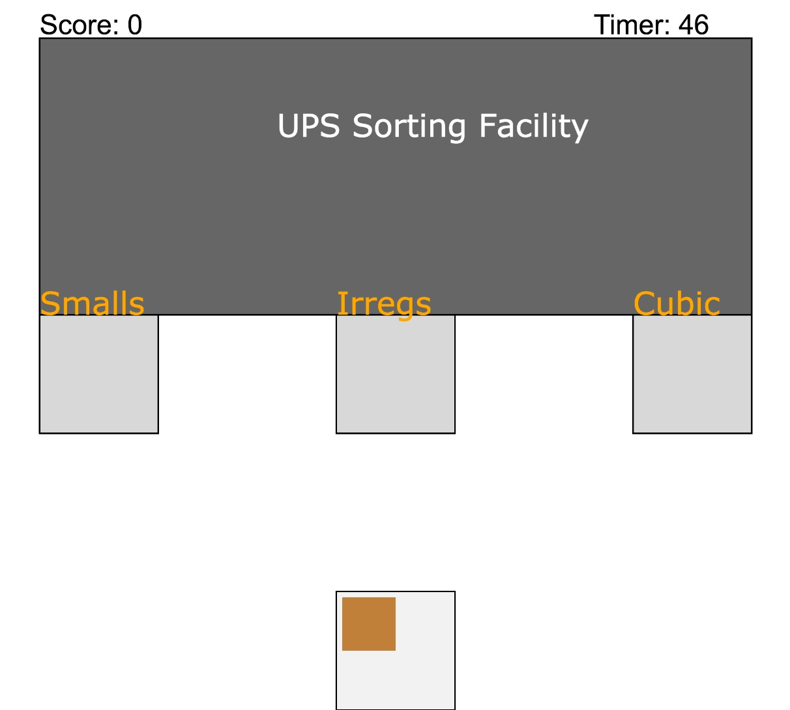
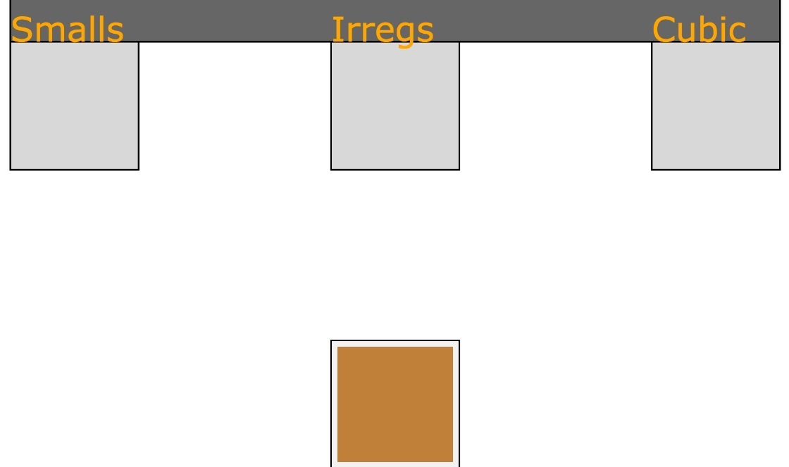
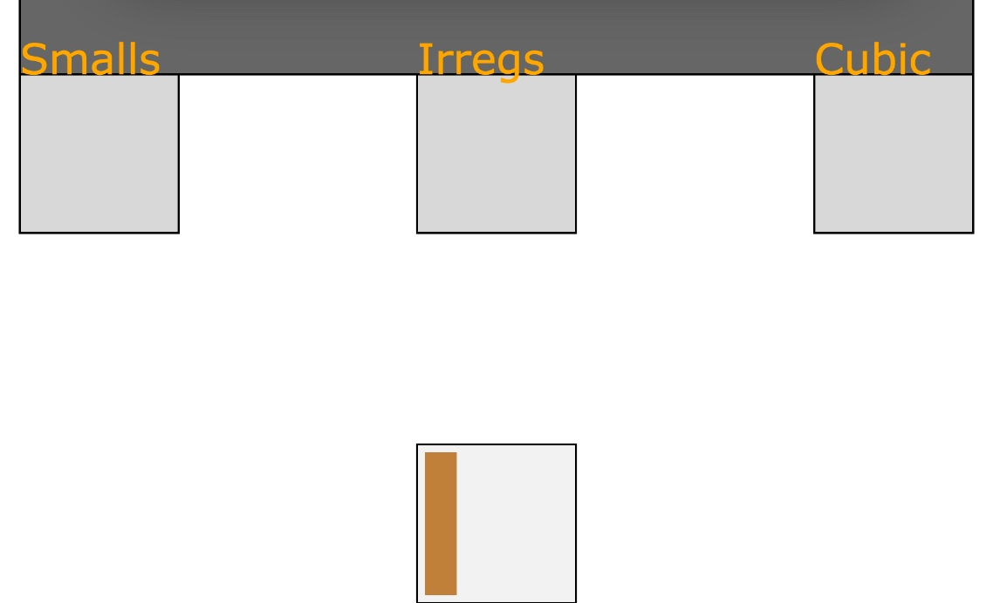
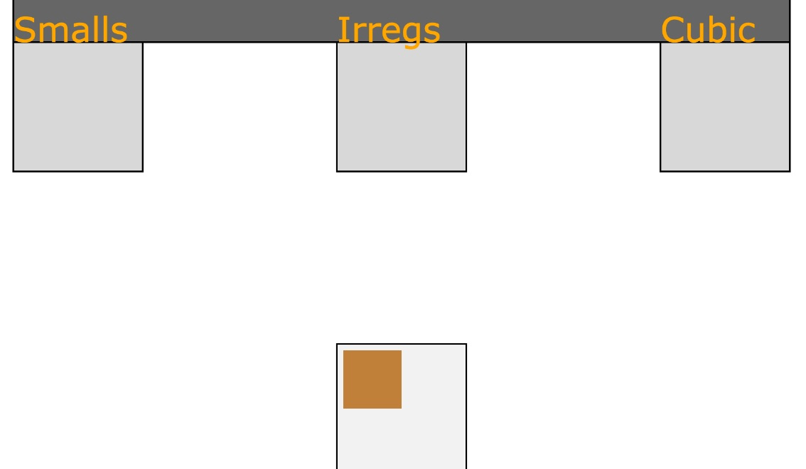

Introduction
This game showcases how the incoming packages are sorted from a cargo container to their appropriate conveyor belt. Although, now most of the sorting is done by technology, you can appreciate the time and work it goes through to sort packages.
Game Overview

This is a diagram of the game. It consists of a UPS facility where you have to drop items into their appropriate conveyor belt (Smalls, Irregs or Cubic) from the cargo container at the bottom of the screen by dragging the packages that spawn from it. There is a timer and scoreboard to gauge how many packages you can sort properly under one minute. When you correctly place a parcel into the correct conveyor belt, you are award one point. Whereas, if you sort a package in the wrong place, you are awarded zero points.
Types of Packages

Cubic Packages
These are your standard cubic packages that can only be sorted into the Cubic conveyor belt.

Irreg Packages
These are your irregular packages called irregs that can only be sorted into the Irregs conveyor belt.

Small Packages
These are your small packages called smalls that can only be sorted into the Smalls conveyor belt.